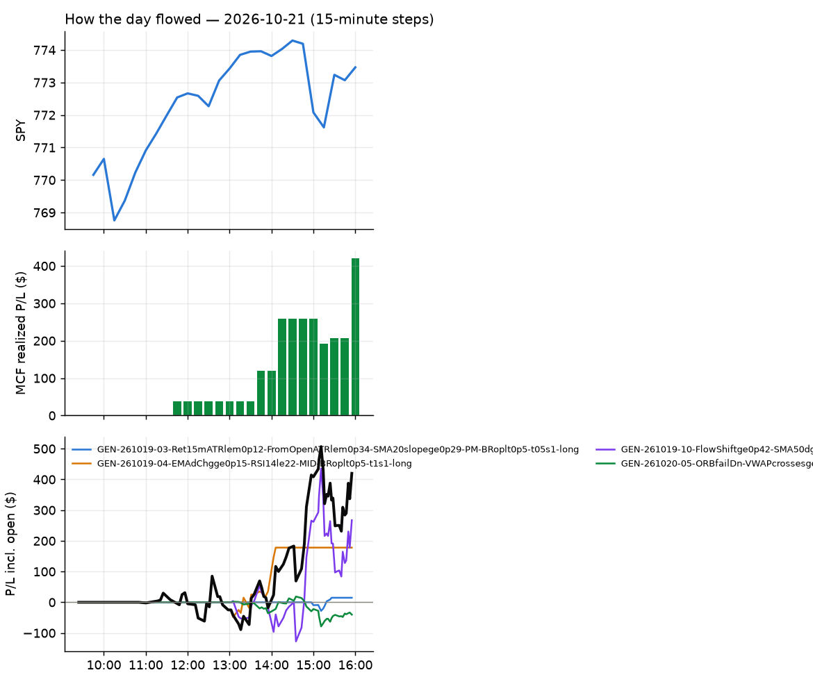
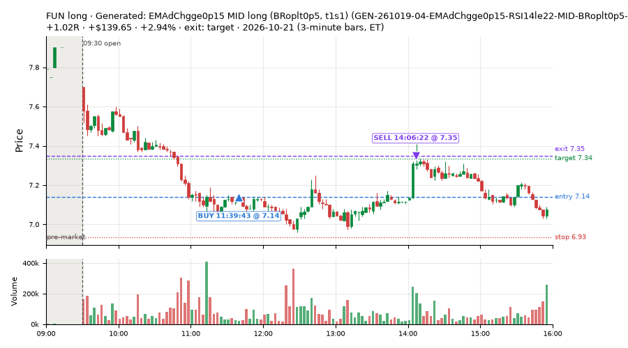
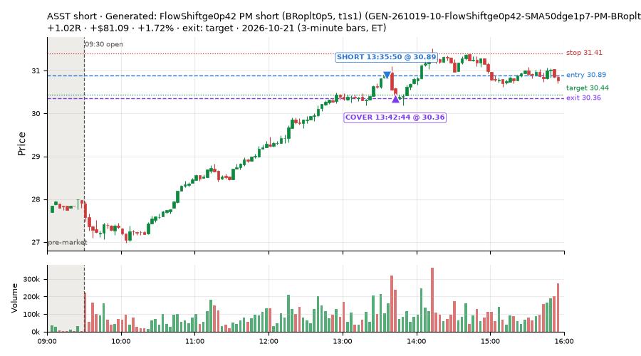
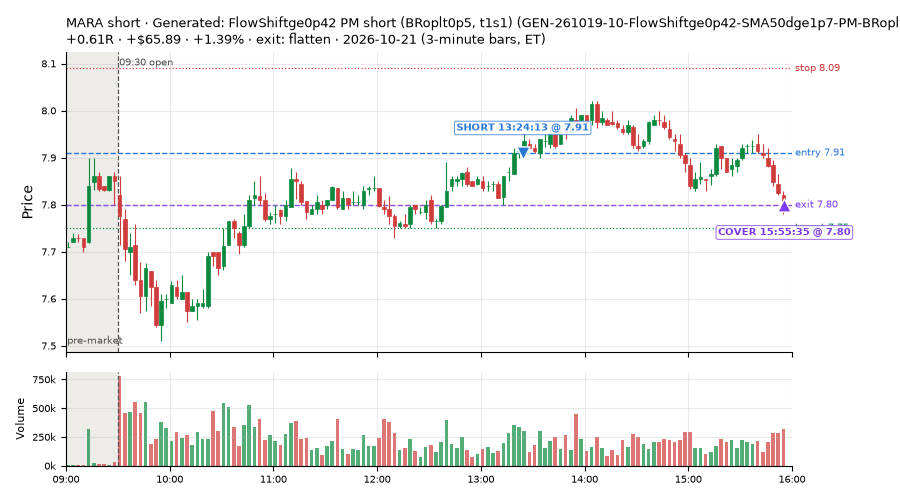
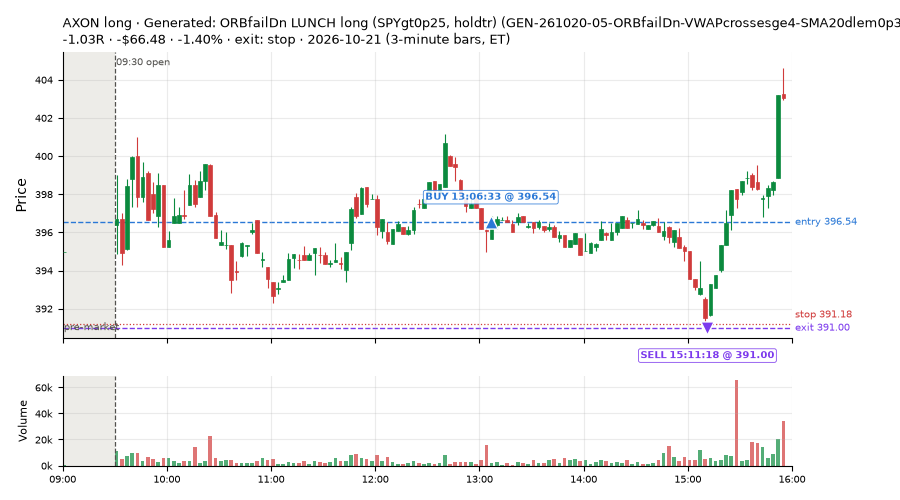
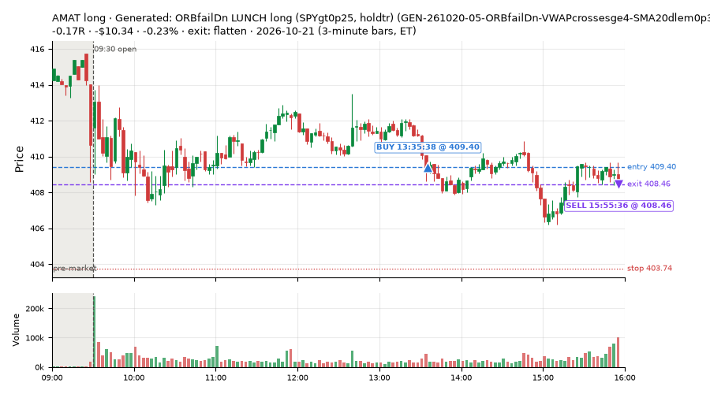
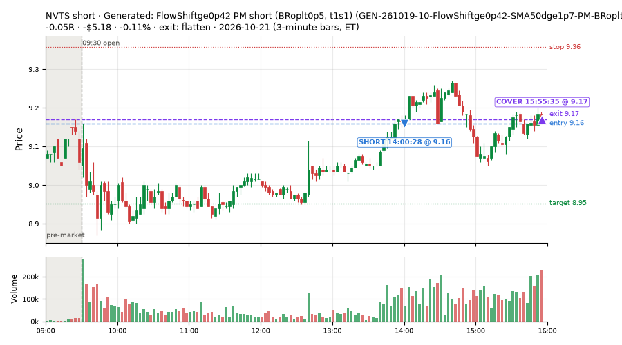

13 trades · win rate 77% · P/L $419.85
PROBATION: no live setup has passed both locked test periods. 10 owner-directed setups added 2026-10-08 (MarcoFlow top 5 + 5 new), untested live. RW6G1 (RW6 + VWAP band guard) added 2026-10-09, probation.

| Symbol | Setup | Side | In | Out | Entry | Exit | Exit reason | % gained | P/L |
|---|---|---|---|---|---|---|---|---|---|
| FUN | Generated: EMAdChgge0p15 MID long (BRoplt0p5, t1s1) (GEN-261019-04-EMAdChgge0p15-RSI14le22-MID-BRoplt0p5-t1s1-long) | long | 11:39 | 14:06 | 7.14 | 7.35 | target | +2.94% | $139.65 |
| ASST | Generated: FlowShiftge0p42 PM short (BRoplt0p5, t1s1) (GEN-261019-10-FlowShiftge0p42-SMA50dge1p7-PM-BRoplt0p5-t1s1-short) | short | 13:35 | 13:42 | 30.89 | 30.36 | target | +1.72% | $81.09 |
| MARA | Generated: FlowShiftge0p42 PM short (BRoplt0p5, t1s1) (GEN-261019-10-FlowShiftge0p42-SMA50dge1p7-PM-BRoplt0p5-t1s1-short) | short | 13:24 | 15:55 | 7.91 | 7.80 | flatten | +1.39% | $65.89 |
| Symbol | Setup | Side | In | Out | Entry | Exit | Exit reason | % lost | P/L |
|---|---|---|---|---|---|---|---|---|---|
| AXON | GEN-261020-05-ORBfailDn-VWAPcrossesge4-SMA20dlem0p31-LUNCH-SPYgt0p25-holdtr-long | long | 13:06 | 15:11 | 396.54 | 391.00 | stop | -1.40% | $-66.48 |
| AMAT | GEN-261020-05-ORBfailDn-VWAPcrossesge4-SMA20dlem0p31-LUNCH-SPYgt0p25-holdtr-long | long | 13:35 | 15:55 | 409.40 | 408.46 | flatten | -0.23% | $-10.34 |
| NVTS | GEN-261019-10-FlowShiftge0p42-SMA50dge1p7-PM-BRoplt0p5-t1s1-short | short | 14:00 | 15:55 | 9.16 | 9.17 | flatten | -0.11% | $-5.18 |






Signal to fill: median 1s, 90th percentile 3s (13 trades). Bars close each minute; the order follows the bar close.
Best excursion (MFE): median 0.67R; worst (MAE) median 0.41R. 8% of trades never got +0.25R in our favour; 0 reached +1R and still closed at or below 0.
| Symbol | Setup | Best R | Worst R | Closed R |
|---|---|---|---|---|
| AXON | GEN-261020-05-ORBfailDn-VWAPcrossesge4-SMA20dlem0p31-LUNCH-SPYgt0p25-holdtr-long | +0.12 | -1.03 | -1.03 |
| SOXL | GEN-261019-10-FlowShiftge0p42-SMA50dge1p7-PM-BRoplt0p5-t1s1-short | +1.00 | -0.26 | +0.20 |
| NVTS | GEN-261019-10-FlowShiftge0p42-SMA50dge1p7-PM-BRoplt0p5-t1s1-short | +0.56 | -0.56 | -0.05 |
| AMAT | GEN-261020-05-ORBfailDn-VWAPcrossesge4-SMA20dlem0p31-LUNCH-SPYgt0p25-holdtr-long | +0.26 | -0.57 | -0.17 |
| MSTR | GEN-261019-10-FlowShiftge0p42-SMA50dge1p7-PM-BRoplt0p5-t1s1-short | +0.76 | -0.40 | +0.42 |
| Entry time | Trades | Win | Avg R | P/L |
|---|---|---|---|---|
| 10:30-11:30 | 1 | 100% | +0.57 | $38.34 |
| 11:30-13:00 | 1 | 100% | +1.02 | $139.65 |
| 13:00-14:00 | 9 | 78% | +0.34 | $232.29 |
| 14:00-16:00 | 2 | 50% | +0.08 | $9.57 |
| Setup | Trades | Win | Avg R | Adj R (net of SPY) | P/L |
|---|---|---|---|---|---|
| Generated: Ret15mATRlem0p12 PM long (BRoplt0p5, t05s1) (GEN-261019-03-Ret15mATRlem0p12-FromOpenATRlem0p34-SMA20slopege0p29-PM-BRoplt0p5-t05s1-long) | 1.0 | 100% | +0.22 | +0.03 | $14.75 |
| Generated: EMAdChgge0p15 MID long (BRoplt0p5, t1s1) (GEN-261019-04-EMAdChgge0p15-RSI14le22-MID-BRoplt0p5-t1s1-long) | 2.0 | 100% | +0.79 | +0.71 | $177.99 |
| Generated: FlowShiftge0p42 PM short (BRoplt0p5, t1s1) (GEN-261019-10-FlowShiftge0p42-SMA50dge1p7-PM-BRoplt0p5-t1s1-short) | 7.0 | 86% | +0.42 | +0.38 | $267.26 |
| Generated: ORBfailDn LUNCH long (SPYgt0p25, holdtr) (GEN-261020-05-ORBfailDn-VWAPcrossesge4-SMA20dlem0p31-LUNCH-SPYgt0p25-holdtr-long) | 3.0 | 33% | +0.05 | +0.18 | $-40.15 |
Market direction (SPY, beta 1) accounted for $18.01 of today's $419.85; the rest ($401.84) came from the setups themselves. Avg R net of SPY: +0.36 (incl. a hedge leg's cost; report only).
30 setups live today. Today: 16 signals, 13 taken, 0 lost because another setup held the symbol (0%). Since 2026-10-19 (3 sessions): 33 signals, 25 taken, 0 lost to other setups (0%). Peak open positions today 10 of 80 slots. Earnings blackout removed 552 symbols before scanning.
Simulated playing time (not live): 8 what-if trades of signals not taken, avg +0.29R, 62% winners; of them 0 lost to another setup.
Silent: GEN-261019-02-BBpctle0p017-SMA20slopege0p46-PM-QQQdn-t05s1-long, GEN-261019-09-EMAdChgge0p15-Since950ATRge0p6-PM-SPYltm0p5-t05s1-short, GEN-261019-08-NewHOD-Slope6ge0p03-DayRngVsPrevge1p5-AM-SPYdn-hold-short, GEN-261019-07-VolRatioge2-UpWickge0p59-DayRngVsPrevge1p5-LATE-SPYgt0p5-t05s1-long, GEN-261019-06-VWAPxUp-EMAdiffge0p29-PM-SPYgt0p5-holdtr-long, GEN-261019-05-RSIslopelem9-PDLdistle0p14-EMAdifflem0p46-OPEN-SPYltm0p5-t1s1-long
| Prio | Setup | Today sig / taken | Sessions | Signals / taken / trades | Taken/day | Expected/day | Lost to other setups | Lost to (setup n) | Top skip reasons | SIMULATED: not-taken n / avg R / win | Verdict |
|---|---|---|---|---|---|---|---|---|---|---|---|
| 1 | Generated: MACDhge0p079 OPEN long (QQQup, t1s05) GEN-261021-10-MACDhge0p079-VWAPbarslem7-OPEN-QQQup-t1s05-long | 0 / 0 | 1 | 0 / 0 / 0 | 0.00 | – | 0 | – | – | 0 / – | quiet - wait no signals in 1 session(s); too early to tell |
| 2 | Generated: RSI2le0, Ret15mATRge0p16 LUNCH long (QQQgt0p6, holdtr) GEN-261021-08-RSI2le0-Ret15mATRge0p16-ATRdge3p6-LUNCH-QQQgt0p6-holdtr-long | 0 / 0 | 1 | 0 / 0 / 0 | 0.00 | – | 0 | – | – | 0 / – | quiet - wait no signals in 1 session(s); too early to tell |
| 3 | Generated: FlowShiftlem0p41 OPEN long (QQQup, t05s05) GEN-261020-08-FlowShiftlem0p41-Compress6le0p077-OPEN-QQQup-t05s05-long | 0 / 0 | 2 | 0 / 0 / 0 | 0.00 | – | 0 | – | – | 0 / – | quiet - wait no signals in 2 session(s); too early to tell |
| 4 | Generated: BearDiv LAM short (SPYltm0p25, t1s1) GEN-261021-01-BearDiv-RVolDayle0p47-BarsSinceHODle0-LAM-SPYltm0p25-t1s1-short | 0 / 0 | 1 | 0 / 0 / 0 | 0.00 | – | 0 | – | – | 0 / – | quiet - wait no signals in 1 session(s); too early to tell |
| 5 | Generated: VWAPxDn MID long (BRoplt0p5, holdtr) GEN-261020-06-VWAPxDn-Slope6lem0p011-BarsSinceHODge35-MID-BRoplt0p5-holdtr-long | 0 / 0 | 2 | 0 / 0 / 0 | 0.00 | – | 0 | – | – | 0 / – | quiet - wait no signals in 2 session(s); too early to tell |
| 6 | Generated: RSIslopelem19 AM long (BRvwgt0p7, t1s1) GEN-261021-09-RSIslopelem19-ORHdistlem0p73-AM-BRvwgt0p7-t1s1-long | 0 / 0 | 1 | 0 / 0 / 0 | 0.00 | – | 0 | – | – | 0 / – | quiet - wait no signals in 1 session(s); too early to tell |
| 7 | Generated: BBpctle0p017 PM long (QQQdn, t05s1) GEN-261019-02-BBpctle0p017-SMA20slopege0p46-PM-QQQdn-t05s1-long | 0 / 0 | 3 | 0 / 0 / 0 | 0.00 | – | 0 | – | – | 0 / – | silent no signals in 3 session(s); no expected rate on file |
| 8 | Generated: RSI5le34, Ret15mATRge0p12 LUNCH short (SPYltm0p25, t05s1) GEN-261021-03-RSI5le34-Ret15mATRge0p12-DayRngVsPrevge1p2-LUNCH-SPYltm0p25-t05s1-short | 0 / 0 | 1 | 0 / 0 / 0 | 0.00 | – | 0 | – | – | 0 / – | quiet - wait no signals in 1 session(s); too early to tell |
| 9 | Generated: MACDhge0p12, BullDiv MID short (SPYgt0p25, t05s1) GEN-261020-04-MACDhge0p12-BullDiv-MID-SPYgt0p25-t05s1-short | 0 / 0 | 2 | 0 / 0 / 0 | 0.00 | – | 0 | – | – | 0 / – | quiet - wait no signals in 2 session(s); too early to tell |
| 10 | Generated: RSIslopelem14 LAM long (BRvwlt0p3, t1s05) GEN-261021-05-RSIslopelem14-ORHdistge0p42-LAM-BRvwlt0p3-t1s05-long | 0 / 0 | 1 | 0 / 0 / 0 | 0.00 | – | 0 | – | – | 0 / – | quiet - wait no signals in 1 session(s); too early to tell |
| 11 | Generated: EMAdChgge0p15 PM short (SPYltm0p5, t05s1) GEN-261019-09-EMAdChgge0p15-Since950ATRge0p6-PM-SPYltm0p5-t05s1-short | 0 / 0 | 3 | 0 / 0 / 0 | 0.00 | – | 0 | – | – | 0 / – | silent no signals in 3 session(s); no expected rate on file |
| 12 | Generated: NewHOD LAM short (QQQltm0p6, hold) GEN-261021-04-NewHOD-PDHdistlem0p65-LAM-QQQltm0p6-hold-short | 0 / 0 | 1 | 0 / 0 / 0 | 0.00 | – | 0 | – | – | 0 / – | quiet - wait no signals in 1 session(s); too early to tell |
| 13 | Generated: NewHOD AM short (SPYdn, hold) GEN-261019-08-NewHOD-Slope6ge0p03-DayRngVsPrevge1p5-AM-SPYdn-hold-short | 0 / 0 | 3 | 0 / 0 / 0 | 0.00 | – | 0 | – | – | 0 / – | silent no signals in 3 session(s); no expected rate on file |
| 14 | Generated: VWAPxUp OPEN long (BRvwgt0p7, t05s05) GEN-261019-01-VWAPxUp-ATRdge3p6-FromPCATRlem0p68-OPEN-BRvwgt0p7-t05s05-long | 0 / 0 | 3 | 2 / 1 / 1 | 0.33 | – | 0 | – | spread / quote / size 1 | 1 / +0.91R / 100% | slow 1.7 entries/week; ~36 weeks to 60 trades |
| 15 | Generated: RSIslopelem19, BarRngATRge0p14 LATE short (BRvwgt0p7, t05s1) GEN-261020-02-RSIslopelem19-BarRngATRge0p14-BuyPressge0p17-LATE-BRvwgt0p7-t05s1-short | 0 / 0 | 2 | 0 / 0 / 0 | 0.00 | – | 0 | – | – | 0 / – | quiet - wait no signals in 2 session(s); too early to tell |
| 16 | Generated: MACDhge0p079 MID long (BRvwlt0p3, t05s05) GEN-261020-03-MACDhge0p079-BarsSinceLODle5-MID-BRvwlt0p3-t05s05-long | 0 / 0 | 2 | 0 / 0 / 0 | 0.00 | – | 0 | – | – | 0 / – | quiet - wait no signals in 2 session(s); too early to tell |
| 17 | Generated: MACDhge0p12, RSI5le25 PM long (BRvwgt0p6, t1s05) GEN-261020-01-MACDhge0p12-RSI5le25-PM-BRvwgt0p6-t1s05-long | 0 / 0 | 2 | 0 / 0 / 0 | 0.00 | – | 0 | – | – | 0 / – | quiet - wait no signals in 2 session(s); too early to tell |
| 18 | Generated: VolRatioge2, UpWickge0p59 LATE long (SPYgt0p5, t05s1) GEN-261019-07-VolRatioge2-UpWickge0p59-DayRngVsPrevge1p5-LATE-SPYgt0p5-t05s1-long | 0 / 0 | 3 | 0 / 0 / 0 | 0.00 | – | 0 | – | – | 0 / – | silent no signals in 3 session(s); no expected rate on file |
| 19 | Generated: VWAPxUp PM long (SPYgt0p5, holdtr) GEN-261019-06-VWAPxUp-EMAdiffge0p29-PM-SPYgt0p5-holdtr-long | 0 / 0 | 3 | 0 / 0 / 0 | 0.00 | – | 0 | – | – | 0 / – | silent no signals in 3 session(s); no expected rate on file |
| 20 | Generated: RSIslopelem9 OPEN long (SPYltm0p5, t1s1) GEN-261019-05-RSIslopelem9-PDLdistle0p14-EMAdifflem0p46-OPEN-SPYltm0p5-t1s1-long | 0 / 0 | 3 | 0 / 0 / 0 | 0.00 | – | 0 | – | – | 0 / – | silent no signals in 3 session(s); no expected rate on file |
| 21 | Generated: Ret15mATRlem0p12 PM long (BRoplt0p5, t05s1) GEN-261019-03-Ret15mATRlem0p12-FromOpenATRlem0p34-SMA20slopege0p29-PM-BRoplt0p5-t05s1-long | 1 / 1 | 3 | 4 / 3 / 3 | 1.00 | – | 0 | – | spread / quote / size 1 | 1 / +0.44R / 100% | slow 5.0 entries/week; ~12 weeks to 60 trades |
| 22 | Generated: EMAdChgge0p15 MID long (BRoplt0p5, t1s1) GEN-261019-04-EMAdChgge0p15-RSI14le22-MID-BRoplt0p5-t1s1-long | 2 / 2 | 3 | 2 / 2 / 2 | 0.67 | – | 0 | – | – | 0 / – | slow 3.3 entries/week; ~18 weeks to 60 trades |
| 23 | Generated: VWAPxUp, ORBfailUp AM long (SPYgt0p5, hold) GEN-261021-07-VWAPxUp-ORBfailUp-AM-SPYgt0p5-hold-long | 0 / 0 | 1 | 0 / 0 / 0 | 0.00 | – | 0 | – | – | 0 / – | quiet - wait no signals in 1 session(s); too early to tell |
| 24 | Generated: BBpctge0p81, ORBfailDn AM short (BRvwlt0p3, hold) GEN-261020-10-BBpctge0p81-ORBfailDn-AM-BRvwlt0p3-hold-short | 0 / 0 | 2 | 0 / 0 / 0 | 0.00 | – | 0 | – | – | 0 / – | quiet - wait no signals in 2 session(s); too early to tell |
| 25 | Generated: EMAdChgge0p093, Z12lem0p82 MID long (QQQltm0p3, holdtr) GEN-261020-09-EMAdChgge0p093-Z12lem0p82-VWAPcrossesle0-MID-QQQltm0p3-holdtr-long | 0 / 0 | 2 | 0 / 0 / 0 | 0.00 | – | 0 | – | – | 0 / – | quiet - wait no signals in 2 session(s); too early to tell |
| 26 | Generated: BarRngATRge0p14 OPEN long (SPYgt0p5, t1s1) GEN-261021-02-BarRngATRge0p14-PDLdistlem0p045-OPEN-SPYgt0p5-t1s1-long | 0 / 0 | 1 | 0 / 0 / 0 | 0.00 | – | 0 | – | – | 0 / – | quiet - wait no signals in 1 session(s); too early to tell |
| 27 | Generated: RSIslopege19, LowWickge0p33 AM long (BRvwgt0p7, hold) GEN-261020-07-RSIslopege19-LowWickge0p33-ATRdge4p4-AM-BRvwgt0p7-hold-long | 0 / 0 | 2 | 7 / 5 / 5 | 2.50 | – | 0 | – | spread / quote / size 2 | 2 / -1.10R / 0% | slow 12.5 entries/week; ~5 weeks to 60 trades |
| 28 | Generated: ORBfailDn LUNCH long (SPYgt0p25, holdtr) GEN-261020-05-ORBfailDn-VWAPcrossesge4-SMA20dlem0p31-LUNCH-SPYgt0p25-holdtr-long | 3 / 3 | 2 | 4 / 3 / 3 | 1.50 | – | 0 | – | spread / quote / size 1 | 1 / +2.09R / 100% | slow 7.5 entries/week; ~8 weeks to 60 trades |
| 29 | Generated: FlowShiftge0p42 PM short (BRoplt0p5, t1s1) GEN-261019-10-FlowShiftge0p42-SMA50dge1p7-PM-BRoplt0p5-t1s1-short | 10 / 7 | 3 | 14 / 11 / 11 | 3.67 | – | 0 | – | not shortable / shorts off 3 | 3 / +0.37R / 67% | ok 18.3 entries/week |
| 30 | Generated: ORBfailUp MID long (BRopgt0p5, hold) GEN-261021-06-ORBfailUp-Gapge1p2-MID-BRopgt0p5-hold-long | 0 / 0 | 1 | 0 / 0 / 0 | 0.00 | – | 0 | – | – | 0 / – | quiet - wait no signals in 1 session(s); too early to tell |
Every trade is attached as a CSV you can open and edit in Excel or Google Sheets. Live page: https://misiti15.github.io/MCF/live/